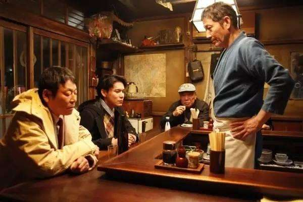

深夜食堂

这是一间营业时间从午夜十二点到早上七点的特殊食堂。这里的老板，不太爱说话，却总叫人吃得热泪盈 眶。在这里，自卑的舞蹈演员偶遇隐退多年舞界前辈，前辈不惜讲述自己不堪回首的经历不断鼓舞年轻人，最终令其重拾自信；轻言绝交的闺蜜因为吃到共同喜爱的美食，回忆起从前的友谊，重归于好；乐观的绝症患者遇到同命相连的女孩，两人相爱并相互给予力量，陪伴彼此完美地走过了最后一程；一味追求事业成功的白领，在这里结交了真正暖心的朋友，发现真情比成功更有意义。食物、故事、真情，汇聚了整部剧的主题，教会人们坦然面对得失，对生活充满期许和热情。每一个故事背后都饱含深情，情节跌宕起伏，令人流连忘返 [6] 。